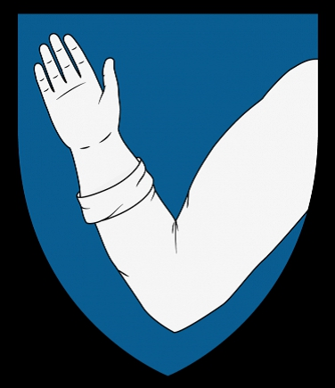

461756 Nils Olofsson Tavast
Hovrättsman, Häradshövding, Riddare. Blev ca 78 år.

Far:
Mor:
Född:
omkring 1355 Tavastland, Finland. [1]
Död:
omkring 1433 Åbo, Finland. [1]
Barn:
Personhistoria
1355?
Födelse omkring 1355 Tavastland, Finland
[1]
1433?
Död omkring 1433 Åbo, Finland
[1]
Källor